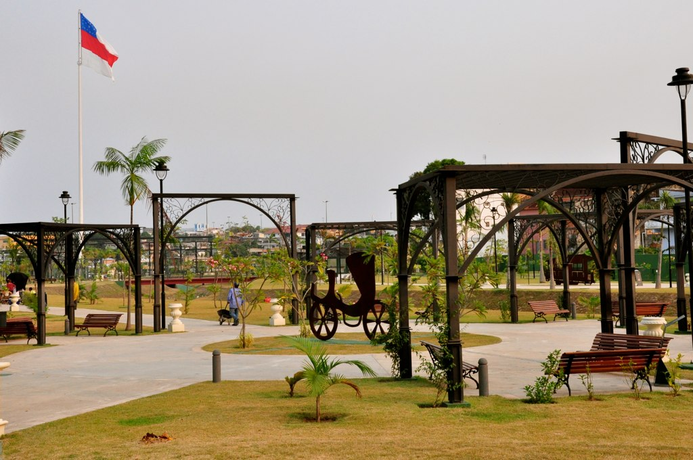
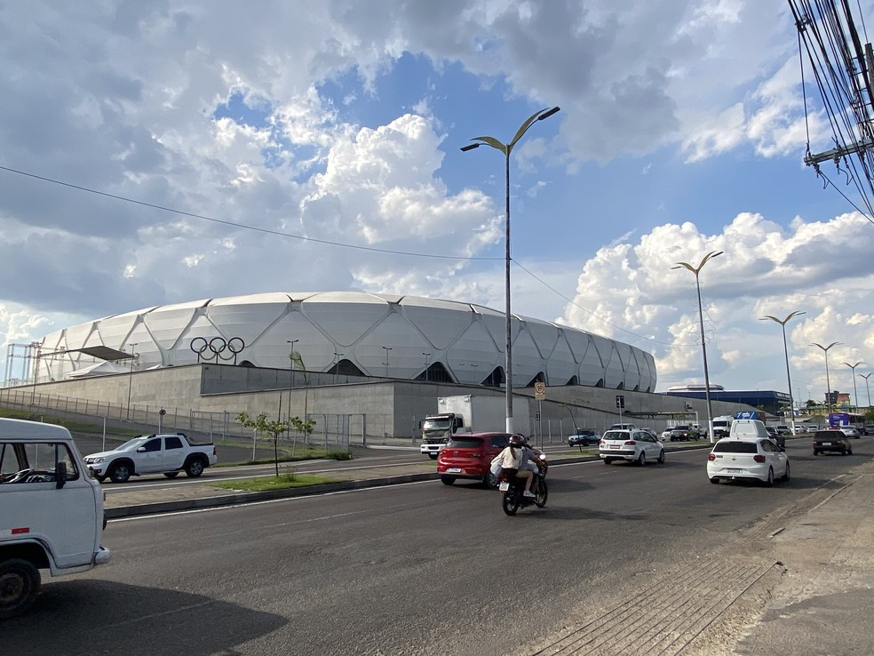
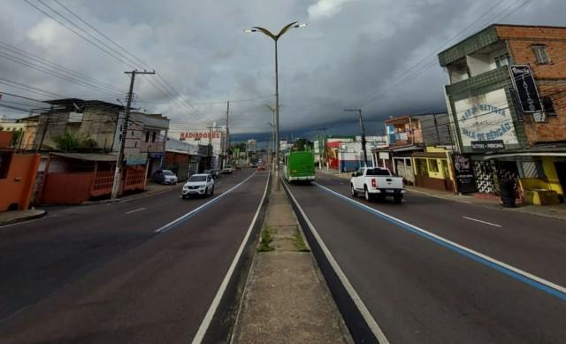
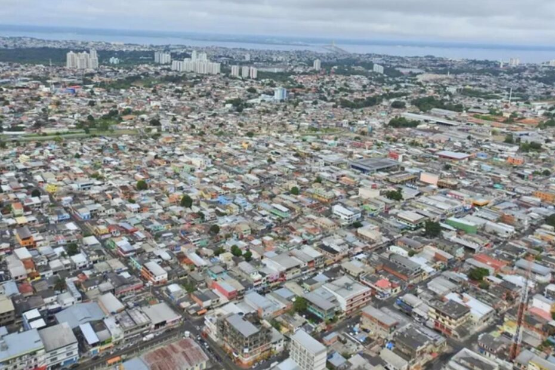

Manaus, a cidade que nega a Amazônia
Quando eu era pequeno, ficava muito incomodado quando viajava e ouvia de outras pessoas que Manaus "deve ser só mato". Que devia ter "onça na rua", "jacaré por todo lado". Achava um desconhecimento, afinal todos os eletrônicos que a pessoa tinha deveriam ter saído do Polo Industrial de Manaus.
Hoje não mudou tanto, as pessoas ainda falam exatamente o mesmo e eu continuo incomodado. Mas de outra forma.
Antes incomodava por ser mentira. Agora incomoda porque eu queria muito que fosse verdade.
Manaus, a cidade que nega a Amazônia
Se fosse verdade, talvez não existisse 8,8°C de diferença entre a Reserva Adolpho Ducke e um bairro populoso. Não existiria uma diferença que já chegou a incríveis 11,3°C entre 2 regiões da cidade.
Dizer que Manaus está ficando mais quente não basta. É preciso saber onde, desde quando e por quê.
O custo do asfalto: cada km de distância até a mata custa quase 0,4°C
A Reserva Adolpho Ducke é a maior mancha de floresta contígua da grade (489 km²), claro sinal de teimosia. E quanto mais longe dela, mais quente. Até atingir um plateau, seja porque tem um limite pro efeito ou porque, querendo ou não, ao redor de Manaus ainda existe verde, por mais que tenha sumido da cidade.
Temperatura sobe com a distância até a floresta mais próxima
°C médio por faixa de distância, todas as 2.040 células
Bairro em Chamas: o efeito localizado
A maior parte da mancha urbana de Manaus já estava consolidada em 2001. Não sobrava vegetação pra perder ali. Mas existe um recorte de espaço e de tempo onde dá pra ver os dois efeitos juntos: Cidade Nova, na divisa entre a cidade e a floresta.
Cidade Nova: vegetação x temperatura[4]
variação % em relação à média de 2001–05 · eixo verde (esquerda) é NDVI, o índice de vegetação calculado por satélite, eixo vermelho (direita) é LST, a temperatura da superfície captada por satélite (diferente da temperatura do ar), cada um na própria escala
Eixo duplo: as duas linhas usam escalas diferentes (cada uma com o próprio máximo, para cima e para baixo), não a mesma régua. Os dois 0% ficam alinhados na grade do meio, então olhe a cor de cada eixo antes de comparar os números.
Ilhas de Calor: o preço do desenvolvimento
Ilha de calor urbana não é força de expressão, é um fenômeno físico bem documentado: asfalto e concreto absorvem radiação solar de dia e devolvem esse calor pro ar durante mais tempo que solo ou vegetação. Sem árvore, não tem evapotranspiração pra resfriar o entorno. Prédios colados uns nos outros bloqueiam o vento que ajudaria a dissipar o calor acumulado. Resultado: a cidade não tem tempo de esfriar antes do sol da próxima manhã.
O efeito não é só desconforto. Noite quente atrapalha o sono, o principal mecanismo do corpo pra se recuperar da exposição ao calor extremo ao longo do dia. Estresse térmico sobrecarrega o sistema cardiovascular, principalmente em quem já tem pressão alta ou problema no coração. Quem trabalha na rua, mora em casa sem isolamento térmico ou não tem acesso a ar-condicionado sente esse efeito primeiro e mais forte. Ilhas de calor não distribuem seu custo igualmente pela cidade.
Menos 57 km² de sombra[6]
Em termos futebolísticos: são quase 8.000 campos de futebol. São 57 km² de Manaus deixaram de ser considerados verdes entre o início e o fim da série (2001 a 2025). É quase o tamanho da própria Reserva Adolpho Ducke: uma reserva inteira perdida em pedaços pela cidade, em apenas uma geração.
Cada ponto é uma célula da grade (n = 1.773)
variação de NDVI, o índice de vegetação por satélite (%), vs. variação de temperatura diurna de superfície (°C) · eixo recortado em ±50% para legibilidade
No Aleixo, a vegetação se manteve estável e o calor subiu no ritmo normal da cidade. Em Petrópolis, um dos maiores picos de calor já documentados, a vegetação que ainda restava caiu 22% no mesmo período e a temperatura praticamente não se moveu. Talvez porque Petrópolis já tivesse batido no teto de calor local muito antes de 2001. Não sobrava vegetação cujo desaparecimento pudesse esquentar ainda mais o ar. Ou porque o pouco verde ao redor da cidade ainda oferece alguma resistência.
A seca ficou mais seca
Comparando a primeira metade da série de chuva de Manaus, entre 2001 e 2012, com a segunda metade, de 2013 a 2025, a cidade está chovendo menos: cai o volume de chuva por ano e caem, principalmente, os dias de chuva por ano. O mesmo padrão aparece numa segunda fonte de dado independente, que cobre um período bem mais longo, desde 1979.
Mas essa queda não está espalhada igualmente ao longo do ano. Ela se concentra no período de maior calor e seca, aumentando os efeitos do calor mencionados na próxima seção. Julho, sozinho, é o mês mais castigado em dias de chuva.
Volume de chuva, mês a mês[12]
variação % entre 2001–12 e 2013–25, mesmo mês do calendário, pra Manaus inteira (cidade e floresta ao redor, sem separar por bairro). Quanto mais perto do vermelho, maior a queda; toque ou passe o mouse pra ver o número exato
Dias de chuva, mês a mês[13]
variação % entre 2001–12 e 2013–25, mesmo mês do calendário, pra Manaus inteira. Toque ou passe o mouse pra ver o número exato
Dezembro a maio praticamente não mudou. A queda inteira do ano está concentrada nos meses secos.
O mecanismo físico é o mesmo já documentado no resto deste site. Menos árvore significa menos evapotranspiração, o vapor d'água que a vegetação libera e que ajuda a puxar chuva de volta pra região. Uma torre de medição instalada no bairro Petrópolis em 2022 mostra isso na prática: na estação seca, a floresta da Reserva Ducke manda 75% da energia disponível pra evapotranspiração, enquanto a área urbana de Manaus manda só 37%. O resto vira calor seco, não vapor d'água.[14]
Quem sente o calor subir
O calor que sobe em Manaus não fica só no termômetro. Ele passa pelo corpo, pela conta de luz, pela água que falta e pela lavoura que a própria floresta ainda sustenta.
Saúde
Noite quente atrapalha o sono e sobrecarrega o coração: risco cardiovascular sobe com o calor extremo.[15]
Recursos
Manaus já bateu recorde de consumo de energia em dia de calor, e sem luz o tratamento de água também para.[16]
Finanças
Manaus já paga a energia mais cara do Brasil (R$1,07 o kWh), e o calor extremo empurra a conta ainda mais.[17]
Ambiente
Menos floresta, menos chuva: a própria Manaus já tem menos dias de chuva por ano que no início da série.[18] Ver os dados.
Plano Diretor de Manaus: Proibido Ter Sombras
Além de possuir poucos parques pela cidade, Manaus tem o péssimo hábito de construir parques com nenhuma árvore. Ou com árvores que não tem projeção de sombra que faça sentido para uma cidade que continua fervendo. E o padrão se repete no desenvolvimento da cidade: quarteirões inteiros encadeando uma sequência de concreto, asfalto e calor.






Perguntas em aberto
Ainda dá tempo ou já cruzamos o ponto de não retorno?
O maior efeito de vegetação e calor que encontramos está numa área de expansão recente (Cidade Nova)[19]. Conter o avanço da cidade sobre a floresta hoje ainda muda o resultado daqui a 20 anos, ou o padrão já está definido demais pra frear? Pro resto do planeta, já sabemos[20] que 1,5°C já é uma realidade, e agora temos que nos planejar pra reduzir os impactos.
Palmeiras imperiais: urbanismo não é estética, é função
As palmeiras imperiais, que já foram projeto urbanístico na cidade, foram uma escolha visual que não entregou sombra nem resfriamento[21]. Da mesma forma, hoje trocam-se árvores em um bairro com a promessa de serem plantadas em outro, como se fosse uma matemática simples. "É, retirei as árvores de lá, mas plantei em dobro a quilômetros de distância".
BR-319: a solução que nos aproxima do fim?
O padrão histórico de rodovias na Amazônia é bem documentado: elas trazem desmatamento. Mas ficar isolado geograficamente não é uma solução. Ferrovias também trazem impacto, aviação custa caro e tem grande emissão de poluentes. Existe solução?
A culpa é nossa. Mas quanto?
A cidade inteira esquenta quase no mesmo ritmo que a área verde ao redor[22], sinal de que parte disso é clima regional (seca, El Niño), e não só Manaus. A cidade é tanto vítima de si quanto do resto do planeta. Mas sem resolver o problema aqui dentro, podemos cobrar solução lá fora?
Ilhas de calor urbano na Amazônia: é possível conciliar o crescimento urbano com a preservação ambiental?
Em outras cidades, sim, mas não por acaso. Nova York[23] e Melbourne[24] colocam meta numérica de cobertura de copa dentro do próprio plano de crescimento, não como reparo depois que a cidade já foi construída. Mesmo assim não é automático: em Perth, a densificação está vencendo a meta de arborização[25], prova de que crescer pra dentro sem cuidado também apaga verde. O padrão de Manaus é outro: a cidade cresce seguindo estrada adentro da floresta[26], empurrando quem chega para a margem, ameaçando áreas ainda verdes. Os próprios dados aqui mostram isso: a maior parte da perda de vegetação está na fronteira de expansão, não no núcleo já consolidado. A solução não é só ocupar o que já é urbano: é crescer de forma inteligente, equilibrando área verde dentro da cidade e arborizando rua a rua. Dá pra fazer isso em Manaus?
Leia mais sobre, no ensaio de Rick Stanley: Ilhas de calor urbano na Amazônia: É possível conciliar o crescimento urbano com a preservação ambiental? ↗
Notas
Dado
Temperatura máxima média
Percentil 90 da temperatura de superfície diurna mensal (não a média simples do bbox, que dilui o efeito da mancha urbana), corrigida da deriva orbital do satélite Terra, regressão linear 2001–2025. Produto MODIS MOD11A2, via Google Earth Engine.
Dado
Amplitude térmica: Reserva Adolpho Ducke × Petrópolis
Média histórica (2001–2025) de temperatura de superfície diurna na célula mais próxima de cada ponto, produto MODIS MOD11A2. O padrão reproduz o que o estudo da UEA (2002–2012) já havia documentado sobre ilhas de calor em bairros como Petrópolis.
Dado
Custo por km de distância até a floresta
Regressão de temperatura contra distância até o fragmento de floresta mais próximo, controlando o NDVI da própria célula, restrita às 214 células já urbanizadas — isola o efeito de proximidade do efeito trivial de “perto da mata também é mais verde”.
Dado
Hotspot de Cidade Nova
Regressão linear (NDVI e LST por ano) nas aproximadamente 10 células vizinhas com a combinação mais extrema de queda de vegetação e alta de temperatura simultâneas, 2001–2025, produtos MODIS MOD11A2/MOD13Q1.
Dado
Mapa de Manaus, célula a célula
Temperatura de superfície diurna, média de 2025, grade de 1 km (2.040 células). Produto MODIS MOD11A2 via Google Earth Engine, corrigido da deriva orbital do satélite Terra.
Dado
57 km² de área verde convertida
Classificação de cada célula da grade por NDVI médio (limiar 0,5) em “verde” ou “urbano”, comparando a janela 2001–05 com 2021–25. 1.585 km² eram verdes no início da série; 57 km² viraram urbanos até o fim dela.
Dado
Quem perdeu vegetação esquentou mais
Contraste entre as 767 células que perderam NDVI e as 1.006 que mantiveram ou ganharam, 2001–05 versus 2021–25 (n = 1.773 células com dado suficiente nas duas janelas): as que desmataram esquentaram, em média, 38% mais.
Dado
Ritmo de aquecimento: cidade versus floresta ao redor
Temperatura diurna média por grupo de células (urbanizadas versus verdes), 2001–05 versus 2021–25. O ritmo de aquecimento das duas é parecido (0,041–0,047 °C/ano), sinal de que parte da subida é clima regional, não só efeito local da cidade.
Matéria
Palmeiras “são condenadas” pela má gestão em Manaus
Das 120 palmeiras imperiais plantadas na Av. Djalma Batista em 2004, 98 ficaram atrofiadas e 6 morreram — todas removidas em 2010. Reportagem sobre o manejo malsucedido do plantio.
Matéria
Aquecimento vai superar 1,5 °C, diz relatório da ONU
A ONU já admite que o planeta vai superar o limite de 1,5 °C do Acordo de Paris “nos próximos anos” — a estratégia virou reduzir o tempo e a severidade da ultrapassagem, não mais evitá-la por completo.
Estudo
Expansão urbana segue a malha viária
Modelagem do risco de desmatamento na Região Metropolitana de Manaus encontrou o maior risco onde floresta disponível se sobrepõe a uma malha viária em expansão, longe do núcleo urbano já consolidado.
Política pública
Meta de cobertura de copa de Nova York
Nova York mira 30% de cobertura de copa até 2030, priorizando plantio nos bairros historicamente mais expostos a ilhas de calor — meta de equidade, não só de cobertura total.
Política pública
Estratégia de floresta urbana de Melbourne
Meta de dobrar a cobertura de copa pública de 22% para 40% até 2040, com pelo menos 3.000 árvores plantadas por ano — meta numérica dentro do próprio plano de crescimento da cidade.
Estudo
Densificação versus cobertura de copa em Perth
Modelagem de sistemas (Collaborative Conceptual Modelling) encontrou que, nas políticas atuais, a pressão por densidade habitacional está vencendo a meta de arborização — mais densidade, menos copa, mais calor.
Estudo
Ilha de calor e internações cardiovasculares
Estudo da EPA com idosos em áreas metropolitanas dos EUA (2000–2017): o risco de internação por doença cardiovascular durante calor extremo foi de 2,4% em áreas de ilha de calor intensa, contra 1,0% em áreas mais frias da mesma cidade.
Dado
Recorde de energia e apagão em Manaus
A Região Metropolitana de Manaus bateu recorde de consumo de energia (1.731,91 MW) em 20/08/2024, dia de 36 °C com sensação térmica de 45 °C. Separadamente, um apagão em março de 2025 (falha numa linha de transmissão do Sistema Interligado Nacional) deixou estações de tratamento de água paradas, mostrando como o abastecimento depende do fornecimento elétrico.
Dado
A energia mais cara do Brasil
kWh a R$ 1,07 no Amazonas contra média nacional de R$ 0,87 (dados ANEEL) — a hidrelétrica de Balbina (250 MW) não supre a demanda de Manaus, que precisa comprar energia mais cara de fora. Segundo a Eletrobras/Procel, o ar-condicionado pode chegar a 40% do consumo residencial de energia no verão.
Estudo
Desmatamento, chuva e renda agrícola na Amazônia
Análise de 1982–2018 encontrou queda de 6% a 30% na chuva sazonal em sete estados produtores de soja associada ao desmatamento na Amazônia — com impacto direto na safra e na renda agrícola na própria região.
Dado
Volume de chuva: 2001–12 versus 2013–25
CHIRPS v3 (produto PENTAD, nativo), reduzido sobre o bbox inteiro de Manaus, que inclui a cidade e a floresta ao redor, sem quebra por zona (o pixel de 5,5 km é maior que boa parte da malha urbana). Comparação por média de metade da série contra a outra metade, não só os anos das pontas, já que uma janela curta é sensível demais a um único ano de El Niño ou La Niña. Confirmado por uma segunda fonte independente, a reanálise ERA5-Land (1979–2025): mesma direção, queda um pouco maior.
Dado
Dias de chuva por ano: 2001–12 versus 2013–25
CHIRPS v3 (produto diário, derivado via satélite IMERG, portanto mais incerto que o volume), limiar de 1 mm/dia (padrão da Organização Meteorológica Mundial), mesmo recorte e mesma técnica do número de volume. A queda se concentra na estação seca, entre junho e outubro; dezembro a maio quase não mudou. Confirmado por uma segunda fonte independente (ERA5-Land): mesma direção, queda maior.
Dado
Julho: o mês mais afetado
CHIRPS v3, mesmo recorte e mesma técnica do resto dos números de chuva do site: 14,2 dias de chuva em julho na média de 2001 a 2012, contra 11,5 dias na média de 2013 a 2025, queda de 19%. Numa segunda fonte independente (reanálise ERA5-Land, 1979–2025), julho também aparece entre os meses mais afetados, com dias de chuva caindo de 24,2 para 17,3 (29%) e volume de 150,2 mm para 90,9 mm (40%).
Dado
Estação seca (junho a outubro): 2001–12 versus 2013–25
Soma dos dias de chuva de junho a outubro, CHIRPS v3, mesmo bbox e mesma técnica do resto dos números de chuva do site: 72,6 dias na média de 2001 a 2012, contra 62,3 dias na média de 2013 a 2025. Numa segunda fonte independente (ERA5-Land), a queda no mesmo período de cinco meses chega a 25% nos dias de chuva e cerca de 28% no volume.
Estudo
Impacto da urbanização no balanço de energia em Manaus
Torre de medição instalada no bairro Petrópolis (2022) comparou o balanço de energia da área urbana com o de floresta primária (Reserva Ducke). Na estação seca, a floresta destina cerca de 75% da energia disponível para evapotranspiração, e a área urbana, só cerca de 37%. O resto vira calor sensível, que aquece o ar diretamente em vez de virar vapor d’água. É o mecanismo físico local por trás da ligação entre perda de vegetação e menos chuva.